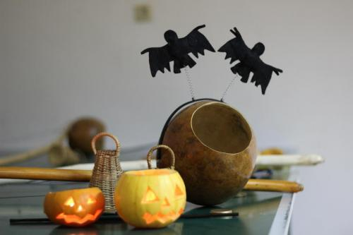
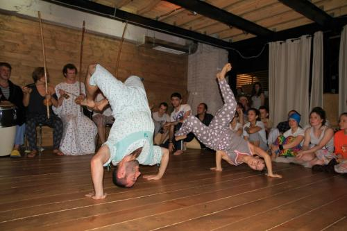
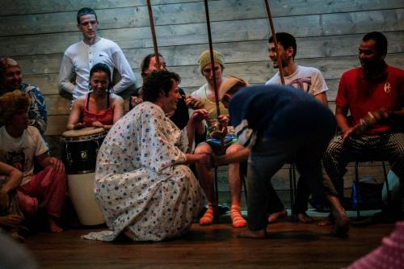
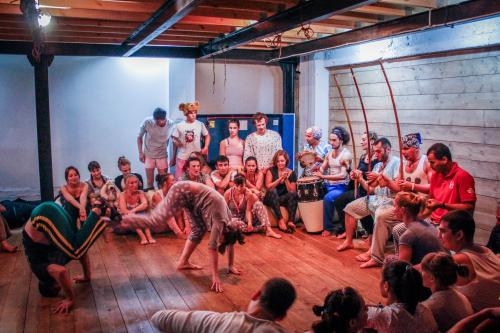
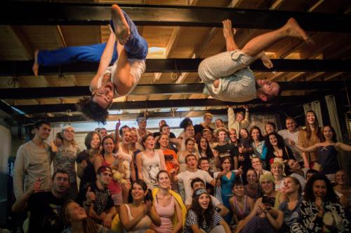

«Beautypo» — теперь писать посты еще легче!
Всем привет! У нас есть очень, очень важное обновление для вас.
Простота написания текста очень важна для нас, поэтому мы, потратив кучу усилий, сделали уникальный форматтер текста с кодовым названием «Beautypo».
Этот форматтер работает при написании постов, сообщений и комментариев. Форматтер работает при предпросмотре. Хотя, честно сказать, с таким форматтером и предпросмотр не нужен!
Возможности форматтера
Теперь очень легко сделать текст полужирным, курсивом, подчеркнутым или зачеркнутым!
Если вы хотите использовать
переводы
строк — используйте их!
Цитату написать проще простого. Действительно это так!
Seigiard, создатель „Beautypo“
Видео с YouTube? Легко!
")
Мы работаем над интеграцией других сервисов видеохостинга.
Изображение в текст? === Галерея?
 Это действительно просто
 Картинки друг за другом…
 …и слайдер готов!
 Круто!
Красота-то какая
Также «Beautypo» в автоматическом режиме расставляет красивые кавычки, длиные и короткие тире, делает несколько автозамен для большего следования правилам русского языка, расставляет переносы по всему тексту и вообще делает текст приятным глазу любителя типографики.